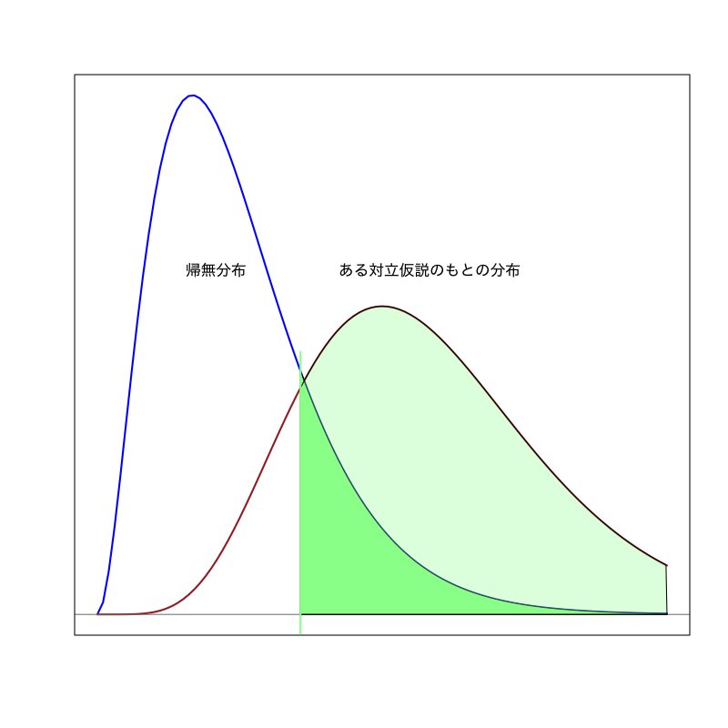

仮説検定
確率・統計 - 第10講
(Press ? for help, n and p for next and previous slide)
前回のおさらい
- 最尤法の考え方
- 最尤推定量の性質
- 一致性
- 漸近正規性
- 最尤推定量による区間推定
- 標本平均の場合
- 母数推定の場合
統計的推測の考え方
- 観測データは確率変数の集合
- 確率変数列 \(X_{1},X_{2},\dotsc,X_{n}\) に対する考察が重要
- 現象の理解のためには観測された実現値より確率分布にこそ興味がある
- 一般に分析対象のデータには 独立性と同分布性が同時に仮定される
- 観測データの背後の確率分布を推定
- 分布のもつ特性量(平均や分散など)を評価する
- 分布そのもの(確率関数や確率密度)を決定する
点推定
定義
点推定とは 母数 \(\theta\) を \(X_{1},\dotsc,X_{n}\) の関数
\begin{equation} \hat{\theta}=\hat{\theta}(X_{1},\dots,X_{n}) \end{equation}で推定することで， \(\hat{\theta}\) を \(\theta\) の推定量と呼ぶ．
区間推定
定義
区間推定とは 未知母数 \(\theta\) とある値 \(\alpha\in(0,1)\) に対して 以下を満たす確率変数 \(L,U\) を観測データから求めることをいう．
\begin{equation} P(L\le\theta\le U)\ge 1{-}\alpha \end{equation}- 区間 \([L,U]\) : \(1{-}\alpha\) 信頼区間 (\(100(1{-}\alpha)\) % とも書く)
- \(L\) : \(1{-}\alpha\) 下側信頼限界
- \(U\) : \(1{-}\alpha\) 上側信頼限界
- \(1{-}\alpha\) : 信頼係数 (\(\alpha=0.01,0.05,0.1\) など)
尤度関数
定義
母数 \(\boldsymbol{\theta}\) に対して 観測データ \(X_{1},X_{2},\dots,X_{n}\) が得られる理論上の確率
\begin{equation} L(\boldsymbol{\theta}) =\prod_{i=1}^nf_{\boldsymbol{\theta}}(X_i) \end{equation}を \(\boldsymbol{\theta}\) の 尤度と言い， \(\boldsymbol{\theta}\) の関数 \(L\) を尤度関数と呼ぶ．
- 離散分布の場合 : \(f\) は確率質量関数
- 連続分布の場合 : \(f\) は確率密度関数
最尤法
最尤法
観測データに対して“最も尤もらしい”母数の値を \(\boldsymbol{\theta}\) の推定量として採用する方法 を最尤法という．
最尤推定量
\(\Theta\) を尤度関数の定義域として， 尤度関数を最大とする \(\hat{\boldsymbol{\theta}}\)
\begin{equation} L(\hat{\boldsymbol{\theta}}) =\max_{\boldsymbol{\theta}\in\Theta}L(\boldsymbol{\theta}). \end{equation}\begin{equation} \hat{\boldsymbol{\theta}} =\arg\max_{\boldsymbol{\theta}\in\Theta}L(\boldsymbol{\theta}). \end{equation}を \(\boldsymbol{\theta}\) の最尤推定量という．
最尤推定量の区間推定
定理 (最尤推定量の漸近正規性)
観測データ数 \(n\) が十分大きいとき， 1次元母数 \(\theta\) を含む連続分布の最尤推定量 \(\hat\theta\) は
\begin{equation} \mathbb{E}[\hat\theta]=\theta_{0},\quad \mathrm{Var}(\hat\theta)=\frac{1}{nI(\hat\theta)} \end{equation}の正規分布で近似できる．
信頼区間の構成
母数 \(\theta\) の \(1{-}\alpha\) 信頼区間は以下で構成される．
\begin{equation} \left[\hat{\theta}-z_{1{-}\alpha/2}\cdot\frac{1}{\sqrt{nI(\hat\theta)}},\; \hat{\theta}+z_{1{-}\alpha/2}\cdot\frac{1}{\sqrt{nI(\hat\theta)}}\right] \end{equation}- サンプル数 \(n\) が十分大きい場合に近似的に正しい
検定とは
統計的仮説検定
- ある現象・母集団に対して仮定された仮説の真偽を データに基づいて統計的に検証する方法
薬の治験の例
新しい薬の効能が古い薬よりも優れていること(仮説)を 薬の治験結果(データ)から検証したい
- 推定と大きく異なるのは， 母集団の分布に対して何らかの 仮説 を考えるところ
検定の基本的手続き
- 仮説を立てる
- 仮説のもとで 検定統計量 が従う標本分布を調べる
- 実際のデータから検定統計量の値を計算する
- 計算された検定統計量の値が 仮説が正しいときに十分高い確率で 得られるかどうかを判断する
検定における仮説
帰無仮説
検定統計量の分布を予想するために立てる仮説
対立仮説
“帰無仮説が誤っているときに起こりうるシナリオ”として想定する仮説
- 慣習として 帰無仮説を \(H_{0}\), 対立仮説を \(H_{1}\) で表す
- “帰無仮説を捨てて無に帰する”ことを期待する場合が多い
帰無仮説と対立仮説
- 薬の治験の例 : (単純な比較)
- 帰無仮説 \(H_{0}\) : 新しい薬も古い薬も効能は同じ
- 対立仮説 \(H_{1}\) : 新しい薬と古い薬の効能は異なる
- 薬の治験の例 : (新薬がより良いことを期待)
- 帰無仮説 \(H_{0}\) : 新しい薬も古い薬も効能は同じ
- 対立仮説 \(H_{1}\) : 新しい薬の方が古い薬より効能が高い
検定の用語
帰無分布
帰無仮説が正しい場合に検定統計量が従う分布
棄却域
帰無仮説の下で統計量の取り得るべき範囲の外の領域
- 仮説検定
- 帰無仮説を 棄却 : 帰無仮説は誤っていると判断すること
- 帰無仮説を 受容 : 帰無仮説を積極的に棄却できないこと
- 検定の誤り
- 第一種過誤 : “正しい帰無仮説を棄却する”誤り
- 第二種過誤 : “誤った帰無仮説を受容する”誤り
検定の設計指針
- 検定統計量 \(T\) に対して棄却域 \(R\) を設計
サイズ : 第一種過誤が 起きる確率
\begin{equation} \text{(サイズ)} =P(\text{\(T\) が\(R\)に含まれる}|\text{帰無仮説が正しい}) \end{equation}検出力 : 第二種過誤が 起きない確率
\begin{equation} \text{(検出力)} =P(\text{\(T\) が\(R\)に含まれる}|\text{対立仮説が正しい}) \end{equation}
有意水準
第一種過誤が起きる確率(サイズ)として許容する上限
棄却域の決め方
- 検定を構成する場合の一般的な戦略 :
棄却域 \(R_{\alpha}\) は以下のように設定する- サイズを小さく (有意水準 \(\alpha\) 以下に) 抑える
可能な限り 検出力を大きく する
\begin{align} P(T \in R_{\alpha}|\text{帰無仮説が正しい}) &\le\alpha\\ P(T \in R_{\alpha}|\text{対立仮説が正しい}) &\to\text{最大化} \end{align}
- 対立仮説によって棄却域の形は変わりうる

Figure 1: 有意水準が小さい場合

Figure 2: 有意水準が大きい場合
両側検定と片側検定
- 棄却域の形による分類
右片側検定
ある定数 \(a\) を用いて \(\text{(棄却域)}=(a,\infty)\)
左片側検定
ある定数 \(a\) を用いて \(\text{(棄却域)}=(-\infty,a)\)
両側検定
ある定数 \(a < b\) を用いて \(\text{(棄却域)}=(-\infty,a)\cup(b,\infty)\)
- 平均の検定の場合 :
- 対立仮説を \(H_{1}:\mu\neq\mu_{0}\) にとった場合は両側検定
- 対立仮説を \(H_{1}:\mu>\mu_{0}\) にとった場合は右片側検定
- 対立仮説を \(H_{1}:\mu<\mu_{0}\) にとった場合は左片側検定
\(p\)-値 (有意確率)
帰無分布における検定統計量の評価
検定統計量の値が棄却域に含まれる有意水準の最小値を考える
\(p\)-値 (有意確率) : (検定統計量 \(T\), 棄却域 \(R_{\alpha}\))
\begin{equation} \text{(\(p\)-値)} =\min\{\alpha\in(0,1)|\text{\(T\) が\(R_{\alpha}\)に含まれる}\} \end{equation}- \(p\)-値が有意水準未満のときに帰無仮説を棄却する
検定に関する注意
帰無仮説の受容の意味
帰無仮説が正しいと仮定しても矛盾は生じない
帰無仮説の正しさを積極的に支持する結果ではない
第二種過誤
一般に第二種過誤の起こる確率については何ら仮定がないため， その確率は非常に大きい可能性がある
正規分布を用いた検定
例題
平均値の検定
ある工場で製造される機械の寿命は平均 \(\mu\) 時間であることが望まれている． \(n\) 個の機械をランダムに選び耐久試験をしたところ， 寿命はそれぞれ \(X_{1},X_{2},\dotsc,X_{n}\) であった． この機械の平均寿命は \(\mu\) であると言えるだろうか？
平均値の差の検定
A県とB県で生産されたの林檎の甘さの違いを調べるために， ある八百屋で売られているそれぞれの林檎一山の糖度を調べたとする． 一つ一つの甘さはばらついているので， それぞれの標本平均を計算したところ
\begin{align} X_{1},X_{2},\dotsc,X_{n} & \to \hat\mu^X=\bar{X}\\ Y_{1},Y_{2},\dotsc,Y_{m} & \to \hat\mu^Y=\bar{Y} \end{align}となった． \(\hat\mu^X\) と \(\hat\mu^Y\) を比べることによって， 本来の平均値が等しい
\begin{equation} \mu^X = \mu^Y ? \end{equation}と言えるだろうか？
McNemar 検定
A社とB社の開発した2つの文字認識機械がある． \(n\) 個の文字に対してその性能を調べたところ
1 2 3 … n A社 ○ ○ × … ○ 98.1% B社 × ○ ○ … ○ 98.0% のような正答率を示した． このときA社の機械はB社より優れていると言えるだろうか？
平均値の差の検定
問題
2つの確率変数列
\begin{align} & X_{1},X_{2},\dotsc,X_{n} \\ & Y_{1},Y_{2},\dotsc,Y_{m} \end{align}が与えられたとき，その平均が等しいか検定せよ．
検定問題
それぞれの平均を \(\theta_{1},\theta_{2}\) とすると
\begin{equation} H_{0}: \theta_{1}=\theta_{2} \quad\text{vs}\quad H_{1}: \theta_{1}\not=\theta_{2} \end{equation}
観測値の確率モデル
\begin{align} X_i&=\theta_{1}+\varepsilon_{1i},\quad i=1,\dotsc,n\\ Y_j&=\theta_{2}+\varepsilon_{2j},\quad j=1,\dotsc,m \end{align}誤差の仮定
- \(\varepsilon_{1i},\varepsilon_{2j}\) は互いに独立に同一の分布に従う
- \(\varepsilon_{1i},\varepsilon_{2j}\) は平均0，分散 \(\sigma^2\) (既知)である
\begin{align} \mathbb{E}[\varepsilon_{1i}]&=\mathbb{E}[\varepsilon_{2j}]=0\\ \mathbb{E}[\varepsilon_{1i}^2]&=\mathbb{E}[\varepsilon_{2j}^2]=\sigma^2<\infty \end{align}- \(\varepsilon_{1i},\varepsilon_{2j}\) は正規分布に従う
母数の推定量
\begin{align} \hat\theta_{1}&=\bar{X}=\frac{1}{n}\sum_{i=1}^{n}X_i\\ \hat\theta_{2}&=\bar{Y}=\frac{1}{m}\sum_{j=1}^{m}Y_i \end{align}直感的な議論
\begin{align} |\hat\theta_{1}-\hat\theta_{2}|\text{が小さい} &\Rightarrow\text{同じと思って良い}\\ |\hat\theta_{1}-\hat\theta_{2}|\text{が大きい} &\Rightarrow\text{どうやら違うらしい} \end{align}
帰無仮説が正しい場合
誤差 \(\varepsilon\) が平均0，分散 \(\sigma^2\) の正規分布に従うので
\begin{equation} \hat\theta_{1}-\hat\theta_{2}=\bar{X}-\bar{Y} \end{equation}は
\begin{align} \text{平均}\quad \mathbb{E}[\bar{X}-\bar{Y}]&=0\\ \text{分散}\quad \mathrm{Var}(\bar{X}-\bar{Y})&=\left(\frac{1}{n}+\frac{1}{m}\right)\sigma^2 \end{align}の正規分布に従う．
検定統計量の構成と帰無分布の導出
分散が1になるようにを正規化した統計量
\begin{equation} T=\sqrt{\frac{nm}{n+m}}\frac{\bar{X}-\bar{Y}}{\sigma} \end{equation}は仮説が正しいとき
\begin{align} \text{平均}\quad \mathbb{E}[T]&=0\\ \text{分散}\quad \mathrm{Var}(T)&=1 \end{align}の正規分布に従う．
有意水準と分位点
正規分布の確率密度関数から \(|T|>z_{1{-}\alpha/2}\) という事象がおこる確率が \(\alpha\) となる \(z_{1{-}\alpha/2}\) (\(1{-}\alpha/2\) 分位点)
\begin{equation*} P\left(|T|>z_{1{-}\alpha/2}\right)=\alpha \end{equation*}を求める．
- 仮説が正しいのなら \(|T|>z_{1{-}\alpha/2}\) という事象は 確率 \(\alpha\) 程度でしか起こらない


棄却域の構成
統計量 \(T\) が以下の領域に入ったら帰無仮説を棄却する．
\begin{equation} R_{\alpha} = \left(-\infty,-z_{1{-}\alpha/2}\right) \cup \left(z_{1{-}\alpha/2},\infty\right) \end{equation}- \(|T|>z_{1{-}\alpha/2}\) が起こったのなら， “滅多に起こらないことが起こった”ので 仮説を正しいと考えることは疑わしいと考える
- “仮説を有意水準 \(\alpha\) で 棄却 する” (\(\Leftrightarrow\) “仮説を 受容 する”)
演習
練習問題
平均値の検定の問題を考えてみよ．
加法的雑音が分散\(\sigma^{2}\)の正規分布に従う確率変数列
\begin{equation} X_{1},X_{2},\dotsc,X_{n} \end{equation}が与えられたとき， 平均値が \(\mu\) と等しいか検定せよ．
解答例
観測値の確率モデル
\begin{equation} X_i=\theta+\varepsilon_{i}, \quad i=1,\dotsc,n \qquad \varepsilon_{i}\sim\mathcal{N}(0,\sigma^2) \end{equation}検定問題
\begin{equation} H_{0}: \theta=\mu \quad\text{vs}\quad H_{1}: \theta\not=\mu \end{equation}
母数の推定量
\begin{equation} \hat\theta=\bar{X}=\frac{X_{1}+X_{2}+\dots+X_{n}}{n} \end{equation}推定量の性質
\begin{align} \text{平均}\quad \mathbb{E}[\hat\theta]&=\theta\\ \text{分散}\quad \mathrm{Var}(\hat\theta)&=\frac{\sigma^2}{n} \end{align}の正規分布に従う．
検定統計量の構成
\begin{equation} T=\frac{\sqrt{n}(\bar{X}-\mu)}{\sigma} \end{equation}は 帰無仮説が正しいとき標準正規分布に従う．
有意水準 \(0.05\) の場合
\(T>1.96=z_{0.975}\) となる確率は
\begin{equation} \int_{1.96}^\infty\frac{1}{\sqrt{2\pi}}e^{-\frac{x^2}{2}}dx =0.025 \end{equation}\(T<-1.96\) の場合も同様
棄却域の構成
\begin{equation} R_{0.05} = \left(-\infty,-z_{0.975}\right) \cup \left(z_{0.975},\infty\right) \end{equation}
練習問題
以下の問に答えよ．
Y県とF県で生産されたの桃の甘さの違いを調べるために， ある八百屋で売られているそれぞれの桃一山の糖度を調べたとする． 一つ一つの甘さはばらついているが， どちらの県でも分散 \(\sigma^{2}=0.6\) の正規分布に従うことが知られている． それぞれの標本平均を計算したところ
\begin{align} X_{1},X_{2},\dotsc,X_6 & \to \bar{X}=15.2\\ Y_{1},Y_{2},\dotsc,Y_{10} & \to \bar{Y}=14.5 \end{align}となった． 本来の平均値が等しいと言えるだろうか？
解答例
観測値の確率モデル
\begin{align} X_i&=\theta_{1}+\varepsilon_{1i}, \quad i=1,\dotsc,n \qquad \varepsilon_{1i}\sim\mathcal{N}(0,\sigma^{2})\\ Y_j&=\theta_{2}+\varepsilon_{2j}, \quad j=1,\dotsc,m \qquad \varepsilon_{2j}\sim\mathcal{N}(0,\sigma^{2}) \end{align}- \(n=6\), \(m=10\), \(\sigma^{2}=0.6\)
検定統計量
\begin{equation} T=\sqrt{\frac{nm}{n+m}}\frac{\bar{X}-\bar{Y}}{\sigma} \end{equation}
棄却域 (例えば \(\alpha=0.05\) のとき \(z_{0.975}=1.96\))
\begin{equation} R_{\alpha} = \left(-\infty,-z_{1{-}\alpha/2}\right) \cup \left(z_{1{-}\alpha/2},\infty\right) \end{equation}検定統計量の計算
\begin{equation} T =\sqrt{\frac{6\times 10}{6+10}}\frac{15.2-14.5}{\sqrt{0.6}} =1.75 \end{equation}
- “Y県の方がF県より甘い” という対立仮説の場合
(右片側検定) 棄却域 (例えば \(\alpha=0.05\) のとき \(z_{0.95}=1.64\))
\begin{equation} R_{\alpha} = \left(z_{1{-}\alpha},\infty\right) \end{equation}
今回のまとめ
- 統計的仮説検定
- 検定の手続き
- 帰無仮説と対立仮説
- 有意水準，棄却域，\(p\)-値
- 過誤と検出力
- 両側検定と片側検定
- 正規分布を用いた検定
- 平均値の差の検定
- 平均値の検定